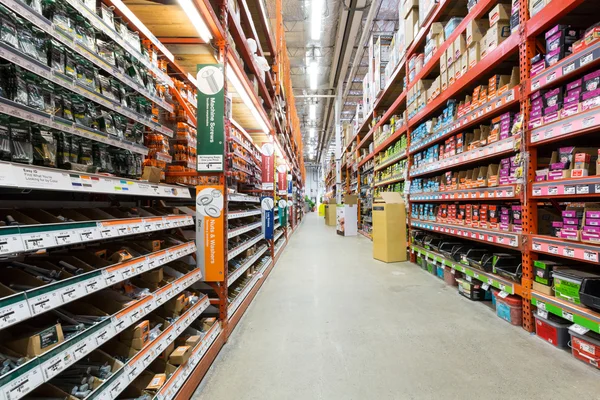

In this Tableau project I analyzed Superstore Sales to identify key areas of improvement within the Superstore sales dataset in Tableau. I explored product sales, profitability, and other relevant factors to drive operational efficiency, enhance customer satisfaction, and maximize overall performance


In this Tableau project I visualized and analyzed my spending trends throughout my senior year of college with tables showcasing my total monthly expenditures, product type breakdown, top spending category and frequented places

In this SQL project, I analyzed sales data to uncover insights about customer buying behavior and identify top-selling products. Through data modeling and SQL queries, I provided valuable information for business analysis and decision-making.

In this SQL project, I analyzed performance data of the top 15 NBA players of the 2022-2023 season, including rankings, teams, positions, and statistics. Through SQL queries, valuable insights were gained to support data-driven decision-making in basketball analysis.
The Excel bike sale dashboard summarizes customer demographics such as commute distance, gender, age, and income, showcasing the correlation with bike purchases for targeted decision-making by retailers.